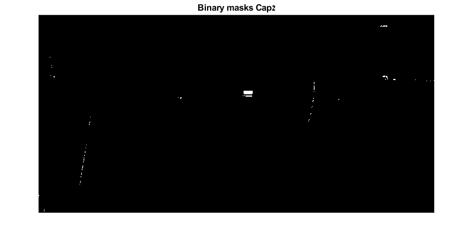
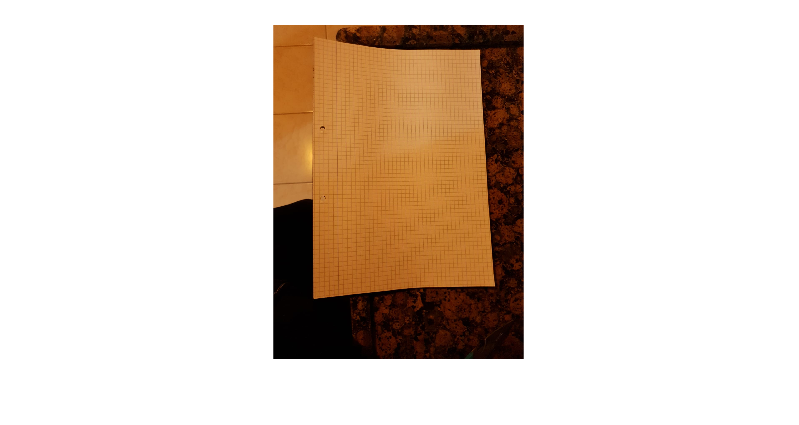
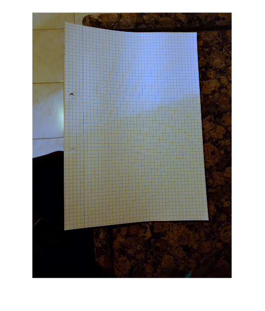

Contents
%-==========================================- % Students ID : Maor Assayag 318550746 | % Refael Shetrit 204654891 | %-==========================================- clear all; close all;
Q5.1 Object circling
Q5.1.1
5.1.1 Read the 'cap1/2.png' images in MATLAB using the 'imread()' function and normalize them to [0 , 1].
cap1 = double(imread('cap1.png'))/255; cap2 = double(imread('cap2.png'))/255;
Q5.1.3
5.1.3 Test your algorithm on 'cap test.png' image. Don't modify the algorithm, it's alright if it fails. Show and analyze the results.
Blue_cap("Cap1" ,cap1); figure; Blue_cap("Cap2" ,cap2); figure; cap_test = double(imread('cap_test.png'))/255; Blue_cap("Cap Test" ,cap_test);
Q5.2.1
rgbImage = double(imread('WB.jpeg'))/255;
imshow(rgbImage, [0 1]);
figure;
R = rgbImage(:,:,1);
G = rgbImage(:,:,2);
B = rgbImage(:,:,3);
gray = dip_rgb2gray(rgbImage);
graymean = mean2(gray);
Rmean = mean2(R);
Gmean = mean2(G);
Bmean = mean2(B);
R = R*graymean/Rmean;
G = G*graymean/Gmean;
B = B*graymean/Bmean;
rgbImage = cat(3,R,G,B);
imshow(rgbImage, [0 1]);
function
Q5.1.2
%5.1.2 Find the blue cap of the soda bottle in the %images and circle it in each image. function Blue_cap(name, img) [imgh,imgs,imgv] = dip_rgb2hsv(img); bluepixels = imgh >= 0.6 & imgh <= 0.7 & imgs >= 0.3 & imgs <= 1 & imgv >= 0 & imgv <= 0.17; m = ones(6,10); I1 = 0; J1 = 0; for i = 1:494 for j = 1:990 b = bluepixels(i:i+5,j:j+9); if eq(b,m) I1 = i + 4 ; J1 = j + 10; break end end end imshow(bluepixels,[0 1]); title("Binary masks " + name); figure; radio = 30; imshow(img,[0 1]); hold on t=0:0.1:2.1*pi; x = J1 + radio*sin(t); y = I1 + radio*cos(t); plot(x,y,'r','LineWidth',4); title(name); hold off end  